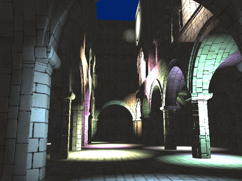
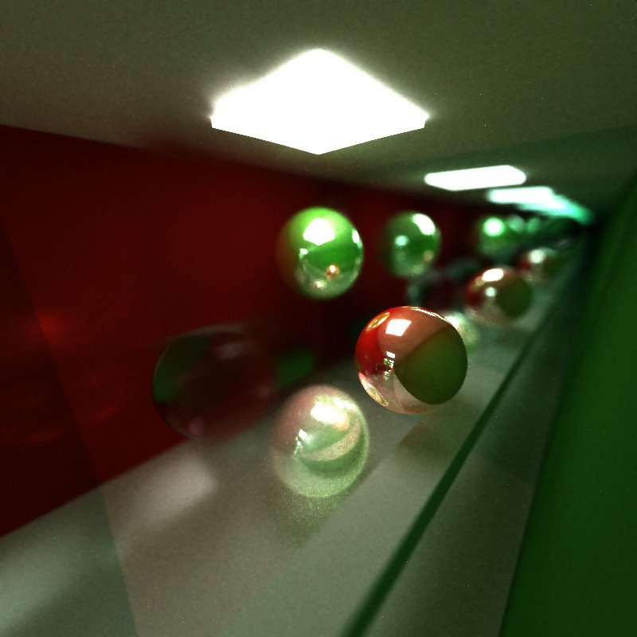
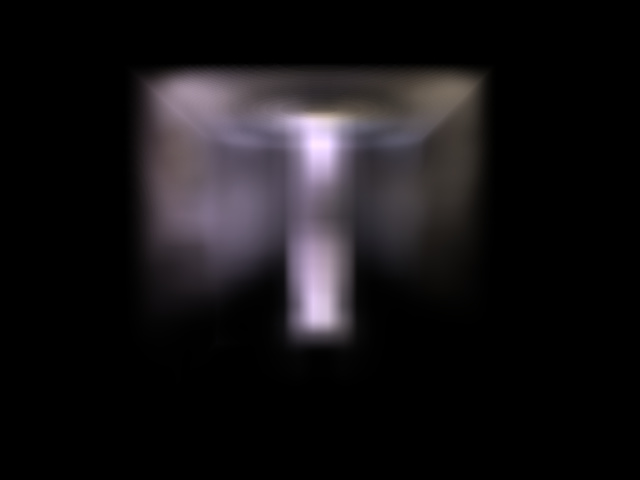
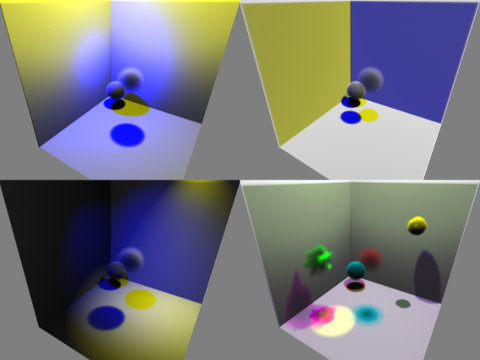
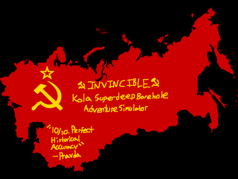
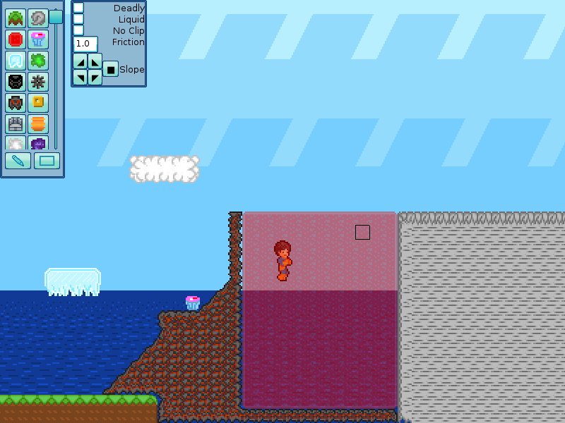

Kai Ninomiya
«co-instructor –
CIS 198: Rust»
«computer science grad student –
Penn»
«corresponding sysadmin –
STWing residential program»
résumé (pdf)
bitbucket · github
publications
Taylor, C.J., Cowley, A., Kettler, R., Ninomiya, K., Gupta, M., and Niu, B.. “Mapping with Depth Panoramas.” IEEE/RSJ International Conference on Intelligent Robots and Systems, Hamburg (Germany), 2015.
[preprint, 4.0 MB]
Ninomiya, K., Kapadia, M., Shoulson, A., Garcia, F., and Badler, N. “Planning Approaches to Constraint-Aware Navigation in Dynamic Environments.” Computer Animation and Virtual Worlds, 26: 119–139, 2015.
[preprint, 7.1 MB] [doi: 10.1002/cav.1622]
Kapadia, M., Ninomiya, K., Shoulson, A., Garcia, F., and Badler, N.I. “Constraint-Aware Navigation in Dynamic Environments.” ACM SIGGRAPH Conference on Motion in Games, Dublin (Ireland), 2013.
about me
I'm super-interested in computer science and physics, especially graphics, hardware design, physical approaches to graphics, and computational approaches to physics.
Despite being a very busy college student, I try to spend as much time as I can doing the things I think are awesome, such as:
- building cool physical things,
- building cool software (see below),
- helping other people and teaching them how to do things they (hopefully) think are awesome,
- and, occasionally, making things pretty.
projects
coursework + other
-
Deferred shading renderer (Oct. 2015, created from scratch, to prepare course assignment base code)
-
CIS 565 GPU Path Tracer (Oct. 2014, coursework)
-
CIS 563 Smoke Simulation (Mar. 2014, expanded coursework)
[videos: initial temperature source (13 MB), initial velocity source (14 MB)] -
CIS 560 Volumetric Renderer (Oct. 2013, expanded coursework)
-
Invincible (Unity Web Player) (Mar. 2014, Penn Play Game Jam)
-
Chickens + the EGGS GL GUI System (Jan. 2011–Jan. 2014, group)
{kind=link}
{kind=link}
{kind=link}
{kind=link}
{kind=link}
(updated November 2015)